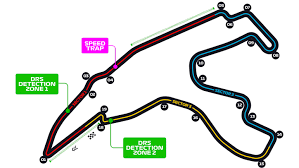
6 Horas de Spa-Francorchamps
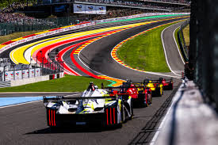
Spa-Francorchamps, Bélgica
El último ensayo antes de Le Mans. Un trazado que combina clima extremo y curvas de altísima velocidad como Pouhon.
- Longitud: 7,004 km
- Curvas: 20
- Exigencia Frenos: Media-Alta
- Consumo: Elevado
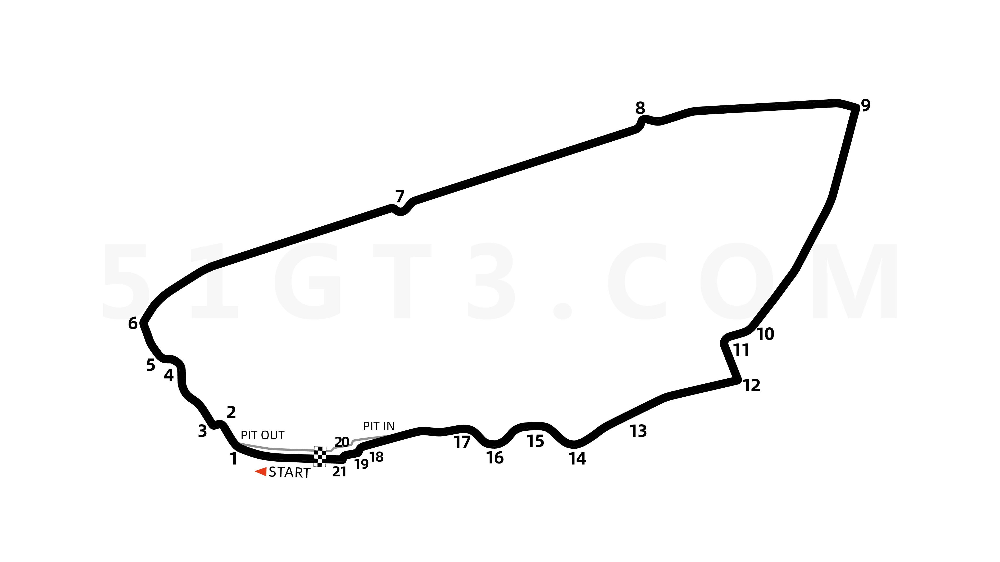
24 Horas de Le Mans
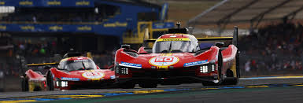
Circuit de la Sarthe, Francia
La carrera más importante del mundo. 85% del tiempo los motores van al máximo de su capacidad.
- Longitud: 13,626 km
- Curvas: 38
- Exigencia Neumáticos: Extrema
- Recta Mulsanne: 6 km aprox.
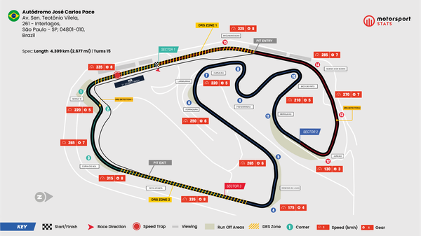
6 Horas de São Paulo
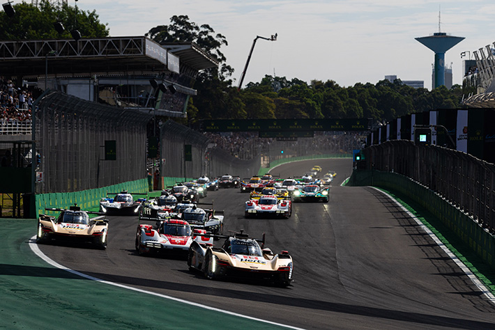
Autódromo de Interlagos, Brasil
Un circuito corto, técnico y con sentido anti-horario que pone a prueba el cuello de los pilotos.
- Longitud: 4,309 km
- Curvas: 15
- Carga Aero: Alta
- Altitud: 800m sobre el nivel del mar
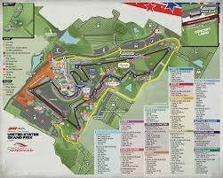
Lone Star Le Mans (Austin)
Circuit of the Americas, USA
Famoso por su subida hacia la curva 1 y sus "eses" inspiradas en Silverstone.
- Longitud: 5,513 km
- Curvas: 20
- Tracción: Crítica en Sector 3
- Superficie: Baches constantes
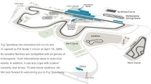
6 Horas de Fuji
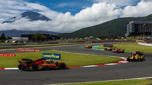
Fuji Speedway, Japón
Cuenta con una de las rectas más largas del mundo (1.5km) y un sector final muy lento.
- Longitud: 4,563 km
- Curvas: 16
- Recta Principal: 1,475 m
- Dato: Propiedad de Toyota
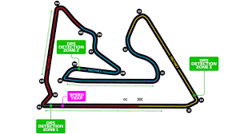
8 Horas de Bahrein
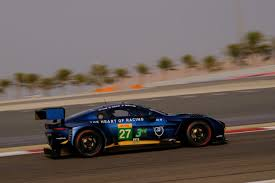
Sakhir, Bahrein
La gran final. Se corre del atardecer a la noche, con temperaturas de pista que caen drásticamente.
- Longitud: 5,412 km
- Curvas: 15
- Frenada: Muy agresiva
- Ambiente: Arena en pista